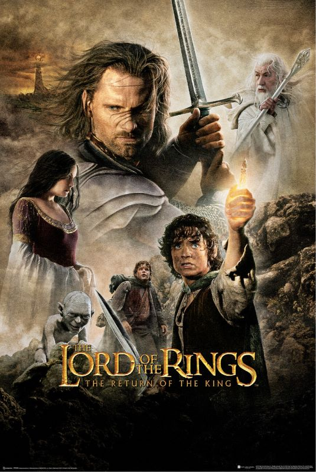

The Lord Of the Rings - The Return of the King


El Señor de los Anillos: El Retorno del Rey es el épico capítulo final de la aclamada trilogía cinematográfica de Peter Jackson, adaptación de las novelas fantásticas clásicas de J.R.R.Tolkien. Ambientada en el mundo ficticio de la Tierra Media, la película continúa justo donde lo dejaron Las Dos Torres, siguiendo al hobbit Frodo Bolsón y su leal compañero Samsagaz Gamgee mientras continúan su peligrosa búsqueda para destruir el todopoderoso Anillo Único en los incendios. del Monte del Destino. Sin embargo, la influencia del Anillo se fortalece a medida que se acercan a su objetivo, amenazando con corromper a Frodo y desatar la maldad de Sauron por toda la tierra.
Mientras tanto, el resto de la Comunidad une fuerzas con el pueblo de Rohan y Gondor para un enfrentamiento épico contra los vastos ejércitos de Sauron, liderados por el mago corrupto Saruman. Espectaculares secuencias de batalla a gran escala marcan la película mientras las fuerzas del bien hacen su heroica última batalla contra la creciente oscuridad. En medio del caos de la guerra, Aragorn finalmente acepta su destino de convertirse en rey mientras Gandalf y los demás intentan desesperadamente distraer la mirada de Sauron de la crucial misión de Frodo.
Con su profundidad emocional, cinematografía y efectos visuales impresionantes, y actuaciones memorables de Elijah Wood, Sean Astin e Ian McKellen, El regreso del rey proporciona una conclusión de la saga profundamente satisfactoria y emocionalmente poderosa. La película obtuvo elogios generalizados de la crítica y ganó una cifra récord de 11 premios de la Academia, incluida la de Mejor Película, consolidando su estatus como una de las mayores epopeyas de fantasía de la historia del cine.